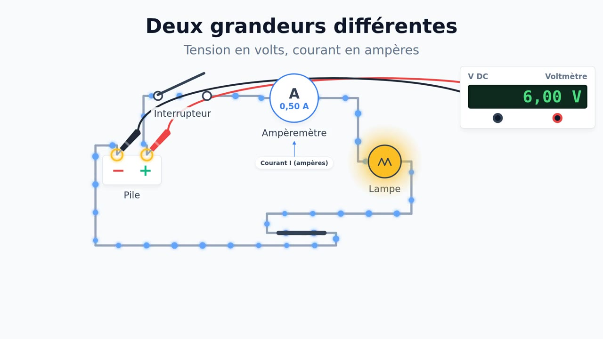

Breeze, une chaîne de production de vidéos pédagogiques par IA
Un pipeline multi-agents qui part d’une idée reçue et en fait une vidéo animée de 90 à 180 secondes, narrée en français : recherche, simplification, script, storyboard, contrôle qualité, rendu, métadonnées et publication. Quatre chaînes thématiques (électronique, physique, mathématiques, économie) tournent dans un même processus.
Architecture
Chaque agent écrit un fichier JSON lu par le suivant. L’agent de contrôle qualité peut renvoyer le script ou le storyboard jusqu’à trois fois avant le rendu. Le rendu dessine chaque image dans un navigateur piloté par Playwright, puis FFmpeg assemble la vidéo, la voix off et les sous-titres. Un tableau de bord web suit l’état de chaque agent et le coût de chaque exécution, et le fournisseur de LLM se choisit dans la configuration (OpenAI, Anthropic, Gemini ou Ollama en local).